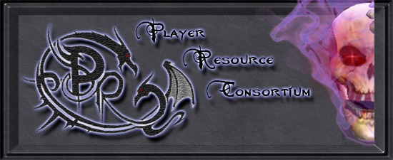

:: PRC v4.1.10 ::
Welcome to the Player Resource Consortium manual!
Binding. Is. HERE!
Yes, that's right, BINDING. The most popular of all the magics systems from the Tome of Magic has finally graced NWN, and with it comes a whole heaping pile of vestiges! 40, count em, 40 vestiges included. That's vestiges from not only Tome of Magic, but Dragon Magic, Mind's Eye, Cityscape, Design and Development, and Class Chronicles - every single Wizards of the Coast vestige ever released.
Coming along for the ride are the eponymous Binder, the Anima Mage, the Knight of the Sacred Seal, the Scion of Dantalion, and the Tenebrous Apostate, along with a fully functional Bind Vestige feat that lets ANYONE use Binding!
As a further bonus, we have 11 new weapons, courtesy of DM Heatstroke, including the famous Falchion and Light and Heavy Picks, along with the Varag race, Favored of the Zulkir feat, and the Gaseous Form spell.
We hope you enjoy!
4.1 Full Changelist
The PRC is the largest ever custom content release for Neverwinter Nights, with over 235 classes, 1500 feats, 1500 spells, 130 races, Psionics, the Tome of Battle, Magic of Incarnum, Binding, Weapons of Legacy, Truenaming, Shadowcasting, Invocations, Templates, Epic Spellcasting, Crafting and so much more, all taken directly from official Dungeons and Dragons material published by Wizards of the Coast.
If you need further assistance, you may find it on our Discord.
If you want to support the PRC, we have a Patreon!.